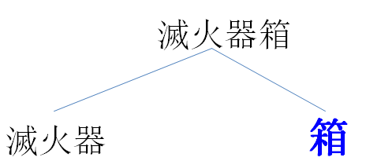
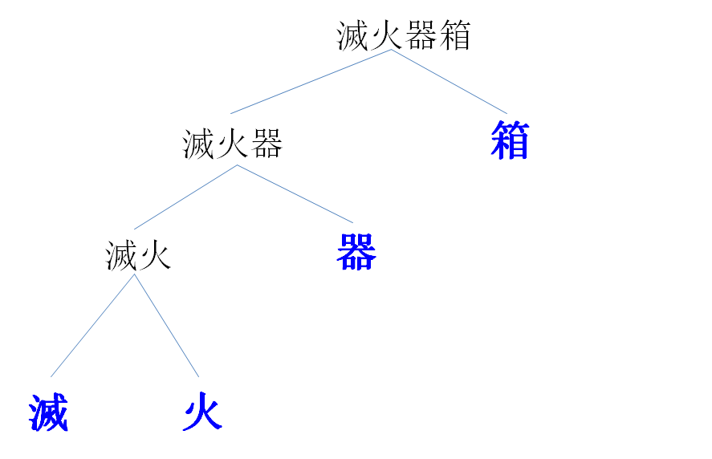

Because of morphemes, it's easy to create new words in language. For example, here are some words
I just made up (they probably don't exist in a dictionary and you probably never heard them before), but you can
probably understand what they mean as long as they're all made of morphemes that you already know:
unsmelly
smellability
理大化
(unsmelly means not smelly; smellability means the property of being able to be
smelled; 理大化 means to become like the Hong Kong Polytechnic University (理大 is the
short name of the university, and 化 is a suffix that means about the same thing as the English suffix -ize).
Try the below activities to figure out more about how morphemes combine.
There's a good example of a made-up word in this video. To see the context, start watching at 2 minutes 30
seconds (you don't need to watch the whole video, you just need to watch an approximately 30-second chunk
starting there), and you will soon see Awkwafina say a made-up word, but it's a word you will probably have
no difficulty understanding.
(Awkwafina is popular but also problematic,
as most celebrities are. But I still like this example.)
What's the new word Awkwafina used? What does it mean? And how would you break it down into morphemes?
Morphemes aren't just put together randomly. They go together in a certain order, creating a heirarchical
structure. Think about a 滅火器箱 (fire extinguisher box: 滅 is
"extinguish", 火 is "fire", 器 is a device or tool, and 箱 is "box").
It is a box (箱) which holds a fire extinguisher (滅火器). In linguistics we can
represent this structure using brackets:
[ [ 滅火器 ] [ 箱 ] ]
or using a "tree" diagram:

Importantly, 滅火器箱 is not a "device box" (器箱) that puts out
fires (滅火). The morphemes were not put together in that way.
Having seen that the word 滅火器箱 was created by putting together 滅火器
with 箱, we can still break it down further. What's a 滅火器? It's not the action of
extinguishing (滅) a fire-device (火器). Instead, it's a (器) that extinguishes fires
(滅火). So we can further see the structure of the word:
[ [ [滅火] 器 ] [箱] ]
And of course, 滅火 itself is also made up of two morphemes; the way they go together should be obvious.
Just like above, we could represent this structure with brackets, or with a tree:

We just walked through how to break down 滅火器箱 into its parts and show its structure.
Now, show the structure of 公共汽車 ("public bus"). (You can use
brackets and/or a tree. You don't need to show every step of your logic, just show the final result. This
is probably easier for Chinese speakers, but even if you don't know Chinese you can probably figure it out
by looking up each character, and each possible combination of characters, in an online dictionary such as
Wiktionary or dict.cn.)
Also answer the question: is the structure of 公共汽車 the same as that of
滅火器箱? I.e., if you put together the morphemes of 公共汽車
in the same way you do for 滅火器箱, would you get a reasonable
structure or not?
Part of the way we figured out the structures for 公共汽車 and 滅火器箱
was by knowing what these words should mean anyway.
Another strategy that can help is knowing how individual morphemes work.
For example, think of the English word recyclable. Which structure is a correct description of this word?
[ [re] [cycle able] ]
[ [re cycle] [able] ]
The correct answer is #2. One reason I know this is because the morpheme re- can only attach to verbs.
(Consider: re-run, re-do, re-heat, re-write are all ok; but *re-blue,
*re-dog, *re-the are all not grammatical in English. In other words, attaching re- to
a verb creates a reasonable new word, whereas attaching re- to a noun, adjective, or article/determiner
does not.) If I tried to make the structure in example #1, I would start with cycle-able
(i.e., able to be "cycled"), which is obviously an adjective; and then I would attach re- to that
adjective, which is not allowed in English grammar. On the other hand, structure #2 is fine: I first combine
re- and cycle (which is a verb), and then I attached -able to recycle.
The way in which morphemes combine also applies to the way in which words combine. You can figure out the
meaning of a complicated phrase by breaking it down into parts.
For example, a friend of mine used to teach a class which he called an "online online class class". What
does that mean? In fact it was a phrase with the following structure:
[ online [ [online class] class ] ]
The core is "online class". Then, "online class" attaches to "class": this was a class about online classes!
(i.e. a class teaching teachers how to teach online classes.) And then the phrase [ [online class] class]
attaches to "online": This "online class class" (i.e., this class about online classes) was taught online!
Hence, it's an online online class class: class which is about online classes and which is taught online.
Here's another example: in Hong Kong there are lots of different ferry companies, and one of them is called
First Ferry (新渡船). One time I made plans with a friend to go hiking at Lantau Island,
and to do that we had to first go to Central and take the ferry to Mui Wo. Because the hike is very long,
we wanted to start early, so we agreed we should take the earliest ferry in the morning. It happens that
the ferry from Central to Mui Wo is run by the company First Ferry. Therefore, I told my friend "let's take
the first First Ferry ferry". (But I was speaking, rather than writing, so of course there were no capital
letters.)
What's the structure and meaning of "first first ferry ferry"?
Sometimes words are ambiguous—the morphemes could have been put together different ways, which would
yield different meanings.
Think about the word unlockable. What are two possible structures (and their meanings) for this word?
When you have finished these activities, continue to the next section of the module:
"Types of morphemes".

![Tree structure of [ online [ [online class] class ] ]](online online class class.png)